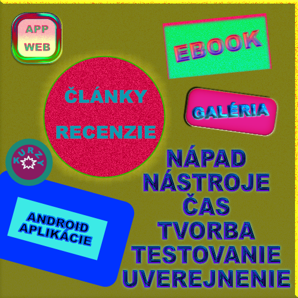

Venujem sa tvorbe digitálnych produktov od roku 2018.
Kde bolo, tam bolo... moja kamarátka mala mať meniny a ja som sa rozhodla ju prekvapiť.
Po dlhšom čase som mala nový smartfón a skúšala som rôzne aplikácie.
Cez jednu takú som vytvorila peknú pohľadnicu.
Kamarátka bola veľmi potešená a povedala mi: "Nevedela som, že si taká kreatívna."
Premýšľala som nad tým, čo mi povedala a rozhodla som sa vytvárať meninové pohľadnice.
Začala som tvoriť obsah najskôr pre jeden web a postupne som vytvorila viac webových stránok.
V prípade záujmu o vytvorenie webovej stránky, ebooku, či digitálnej pohľadnice ma môžete kontaktovať.
Cena dohodou. Ďakujem.
O informačné technológie sa zaujímam už dlhší čas.
Začalo to už vlastne na strednej škole v maturitnom ročníku,
kedy som sa pripravovala na maturitnú skúšku z AutoCADu.
Neskôr som sa začala zaujímať o to, ako funguje web, čo je všetko za tým dizajnom.
V súčasnosti ma najviac zaujíma tvorba mobilných aplikácií a webových stránok.
Inštalujem programy a prezerám weby, potom píšem články a recenzie, ebooky či online kurzy.
Pracujem v editoroch VSCodium, Komodo IDE, iBooks Author či v Affinity Designer/Photo.
Používam GitHub, Terminál aj FileZilla.
Spravujem web postavený na CMS WordPress.
.